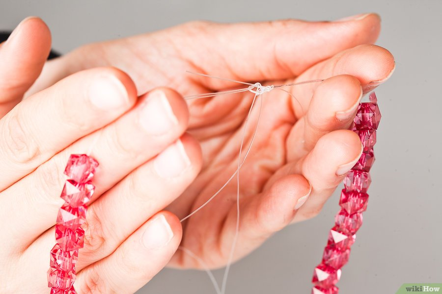

Como fazer um colar
Você pode gastar mais de R$100 em um colar extravagante de marca, ou você pode fazer o seu com só algumas ferramentas, tempo e um pouquinho de criatividade. Você pode fazê-los de vários jeitos, usando de miçangas até botões. Se você quer adicionar novos colares estilizados ao seu porta-jóias em apenas alguns minutos, apenas siga esses passos:

Colar simples:
- Arranje um pedaço de aço inoxidável. Você deve procurar fios maleáveis, mas que não dobrem muito facilmente, para a durabilidade do colar. Assim, não se deve usar fios de espessura muito maiores que 1mm. Esse arame deve ser incolor ou de cor clara para não aparecer, a não ser que essa seja sua intenção.
- Corte o fio no comprimento
desejado. Você pode definir o tamanho pela medida do seu pescoço. Se você quer uma gargantilha, o tamanho será menor, já se for um cordão mais frouxo, o tamanho será maior. É sempre bom fazê-los um pouco maior do que o seu pescoço.
- Se você não for usar fecho, adicione de 8 a 10 cm ao comprimento para poder fechar o cordão, mas se você for usá-lo, adicione de 10 a 20 cm.
- Caso o colar não tenha fecho, lembre-se de que ele terá de passar pela cabeça, então verifique se o comprimento está adequado. Se você está determinado(a) a fazer uma gargantilha sem fecho, você pode amarrar e desamarrar as pontas do colar para usá-lo, mas assim é mais complicado.
-
Escolha suas miçangas. Pense no padrão de miçangas mais legal pra você antes de começar a botá-las no fio. Se você criar o padrão sem planejar, você pode mudar de ideia no meio do projeto. Se você só for usar um tipo de miçanga, então essa parte é fácil.
- Se você for usar várias miçangas, então você pode ou escolher um atraente padrão repetitivo ou enfatizar o centro do colar.
- Você pode estender o fio ao lado das miçangas dispostas na mesa para garantir estar usando a quantidade certa de contas.
- Faça um nó ao final do fio. Isso vai impedir que as continhas caiam do fio. Se as contas tiverem o furo muito grande, faça um nó duplo. Deixe de 5 a 8 cm de sobra depois do nó para conseguir juntar as pontas do colar mais tarde.
- Passe a agulha. Enfie o fio na agulha. Com ela é mais fácil colocar as miçangas no colar. Você não precisa usar a agulha, só que assim é mais difícil e requer mais habilidade.
- Use a agulha para juntar as contas no cordão. Pique as contas com a agulha, uma por uma, e deslize-as pelo fio até que cheguem ao nó. Remova a agulha e faça outro nó ao fim do cordão. Esse nó deve estar à mesma distância das miçangas que o nó da outra ponta do colar – de 5 a 8 cm.
- Junte as pontas do colar. Você pode usar o nó direito ou o nó duplo, que vão fixar as pontas do colar juntas. Agora que você fez o colar, pode surpreender seus amigos e requintar o visual do dia-a-dia.
Colar de Botões
- Escolha os botões. Você pode usar botões velhos que você tem por aí, comprar botões novos em uma loja de artesanato, ou fazer uma mistura dos dois. Disponha os botões numa superfície regular até achar uma combinação agradável de cores para criar seu colar.
- Arranje um pedaço de aço inoxidável: você deve procurar fios maleáveis, mas que não dobrem muito facilmente, para a durabilidade do colar. Assim, não se deve usar fios de espessura muito maiores que 1mm. Quando conseguir um bom fio, corte-o no comprimento desejado.
- Lembre-se de deixar uma sobra de 10 a 20 cm para colocar o fecho no final.
- Amarre um fecho ao final do fio. Isso não deixará os botões caírem. Quando você acabar de colocar os botões, bote o fecho na outra ponta do colar.
- Disponha os botões em um padrão. Escolha o padrão para os botões, seja ele alternante ou completamente randômico. Estique o fio ao lado dos botões dispostos na mesa, para ver se não está colocando botões demais ou de menos.
- Coloque os botões no fio. Depois de escolher o padrão, passe o fio pelos dois buracos de cada botão até que todos estejam presos. Lembre-se de deixar uma sobra para poder prender o outro fecho ao fim do colar.
- Amarre o fecho à segunda ponta do colar. Assim, você termina o seu colar de botões.
- Curta o seu colar novo. Divirta-se usando o seu exótico colar com várias roupas diferentes.